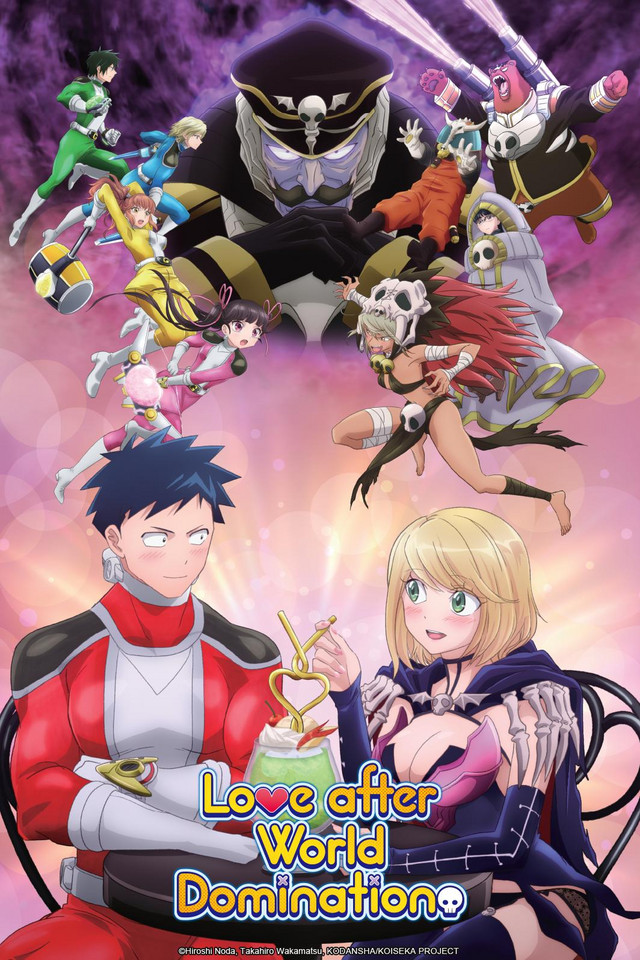

"Spy x Family" Animes de 2022
Spy x Family é uma série japonesa de mangá shōnen escrita e ilustrada por Tatsuya Endo. A história segue a vida de Twilight, um espião que precisa "formar uma família" de forma repentina para executar uma missão. A reviravolta se dá quando percebemos que a garota que ele adota como filha é uma paranormal capaz de ler mentes e a mulher com quem ele concorda em se casar para formar um falso casamento é uma assassina profissional. E a partir daí, acompanhamos essa história de comédia com essa família um tanto quanto diferente vivendo sem saber os segredos uns dos outros.

Aharen-San Wa Hakarenai
Aharen-san wa Hakarenai é uma comédia curta que segue a vida de Ridou e sua colega de classe, Aharen-san, que não consegue determinar bem o quanto de intimidade deve ter ao se relacionar com outras pessoas. Junte-se a pequena, quieta e incompreensível Aharen-san!

Aharen-San Wa Hakarenai
A comédia romântica explora a relação entre Fudō Aikawa, o líder do esquadrão de heróis Gelato 5, cujo objetivo é trazer a paz mundial, e Desumi Magahara, a líder guerreira da organização secreta Gecko, cujo objetivo é dominar o mundo.
